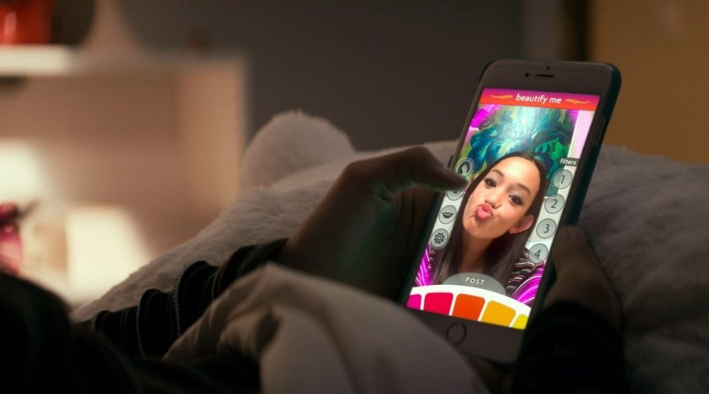
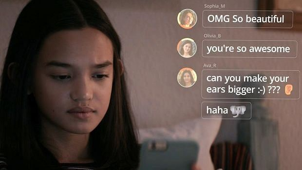
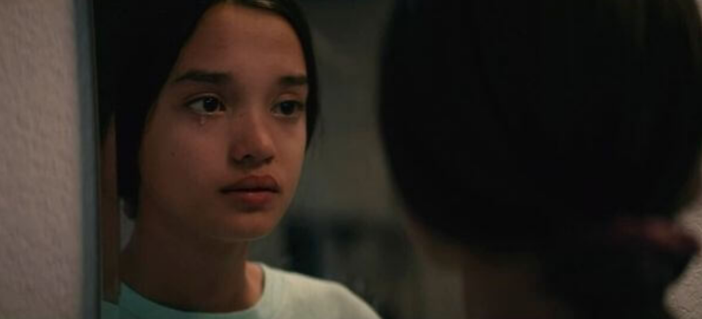

Situaciones familiares y relacionales que se presentan en el documental como un claro ejemplo de como influyen y generan ciertos comportamientos las redes sociales.
Influencia
Cena Familiar
La mamá, propone disfrutar la cena con los cinco sentidos y decide que no habrán dispositivos electrónicos en el transcurso de ella,por lo que realiza un experimento de que todos los miembros de la familia entreguen sus celulares, para almacenarlos en un contenedor de plástico.
Al plantear dicha condición, se presentan una serie de comportamientos y acciones:
•••

•••

•••

Dispersión
La familia se encuentra dispersa, por
lo tanto no hay temas de conversación
a tratar solo hay un silencio incómodo
ya que normalmente andan conectados
a sus dispositivos y no suelen compartir.
Ansiedad
Empiezan a llegar notificaciones en el
celular del muchacho Ben, por lo tanto
siente ansiedad de saber de quién es,
pero acata las órdenes de su madre.
Sin embargo, la hermana menor Isla
siente ansiedad e inventa una excusa
para ir a la cocina en busca del
contenedor e intenta abrirlo con un
martillo y logra sacar su dispositivo.
Adicción
Se presentan síntomas de adicción
donde no aceptan el tiempo real
que invierten en la pantalla y lo
catalogan como algo normal.
Selfies y filtros
•••

•••

•••

Isla se toma una fotografía donde no recibe mayor
acogida ya que solo tuvo 2 likes, por lo que decide
borrarla y tomarse una nueva.Esta nueva fotografía
decide ponerle filtros para aumentar su belleza
y de esta manera recibir más likes.
Las redes sociales comenzaron a excavar en el tronco
cerebral para apropiarse del sentido de valoración e
identidad de los niños.Con la evolución empezó a
importar lo que la sociedad pensara de nosotros por
que es importante la aprobación social.
Se empieza a valorar la vida con base al
sentimiento de perfección por que se reciben
recompensas a muy corto plazo :corazones,
reacciones, pulgares.Se considera verdadero pero
en realidad es popularidad falsa, que dura poco
y que deja vacios y conlleva a un circulo
vicioso en el que te incita a pensar que hacer para
obtener esa aprobación otra vez.
Conclusión
•••

Las redes sociales han intervenido en nuestras acciones y relaciones interpersonales.Como se mencionaba anteriormente, estas redes han creado canales a tal punto de convertirse en algo adictivo y difícil de controlar, más que todo en la generación Z que tiende a ser más ansiosa, más fragil y más depresiva, y por lo tanto más fácil de influenciar y enganchar.
Es como si estas redes fueran un chupete digital para calmar esos instantes de soledad, incomodidad y ansiedad estropeando la capacidad de lidiar con eso por cuenta propia.No se es consciente que al depender tanto de esto se están beneficiando a otros, ya que se es más rentable para una corporación si pasamos el tiempo mirando una pantalla , que si pasamos ese tiempo viviendo plenamente y siendo felices. A ellos no les importa atraer a nosotros las cosas que son más consistentes con nuestros objetivos,valores y vidas, solo quieren atraer nuestra atención hacia sus intereses.
Adicional a esto, millones de personas se han quitado la vida por creer cosas de si mismos que no son reales, solo son una construcción absurda que se imponen en la sociedad y que las redes lo impulsan como un modeloque debe seguirse al pie de la letra. Cuestiones físicas, de pensamiento, de acciones,de sentir, de actuar,de orientación sexual, de formas de vestir y millones de cosas más que, sin duda no son relevantes pero que si causan miles de problemas psicológicos de depresión, ansiedad , baja autoestima e inseguridad, incluso en los más pequeños.
Es momento de hacer un pare y reflexionar sobre el poder que le estamos dando a las redes sociales y a toda esta tecnología de entrar en nuestras vidas y convertirse en un elemento del cual dependemos, desde el primer instante en el que abrimos los ojos hasta acostarnos a dormir.Hasta que punto dejamos que esto intervenga en los momentos y relaciones con nuestras familias y amigos, pero también en nuestra propia identidad y construcción social y cultural.Es ahora dónde debemos empezar a tomar acciones como: ponerte lapsos de tiempo cortos para estar conectado, empezar a construir una relación sólida con tu familia compartiendo y realizando actividades que más les guste, darle prioridad a cosas relevantes que si beneficien tu construcción personal.Todo depende de ti, tú eres el que pone los límites sobre la mesa, ¿Qué esperas para transformar tu vida?.